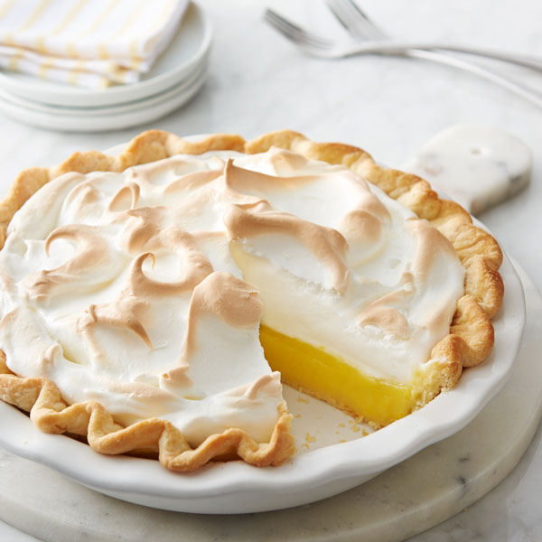

Plăcintă cu bezea de lămâie
Aceasta este plăcinta perfectă cu bezea de lămâie! Cu o crustă delicioasă de plăcintă de casă, umplutură plăcută și lămâie netedă și o topping pufos de bezea prăjită, este imposibil să reziste.
Preîncălziți cuptorul la 375 ° F (190 ° C) și reglați suportul cuptorului în poziția cea mai joasă. Parțial orb coaceți coaja de plăcintă într-un vas de plăcintă de 9 inci. (Urmați instrucțiunile de coacere oarbe până la pasul 9.) Sfat: Puteți începe cu pașii de umplere a plăcintei cu bezea de lămâie în timp ce coaja este coaptă orb. Dar realizarea umpluturii este sensibilă la timp, deoarece veți tempera gălbenușurile de ou, așa că dacă nu vă faceți mai multe operații, așteptați până când coaja dvs. se termină cu coacerea oarbă înainte de a începe umplutura.
Reduceți temperatura cuptorului la 350 ° F (177 ° C).
Urmăriți videoclipul de mai sus pentru a vedea cum lucrez prin fiecare dintre pașii următori. Faceți umplutura: amestecați gălbenușurile împreună într-un castron mediu sau într-o ceașcă de măsurare lichidă. Pus deoparte. Bateți apa, zahărul granulat, amidonul de porumb, sarea, zeama de lămâie și coaja de lămâie împreună într-o cratiță medie la foc mediu. Amestecul va fi subțire și tulbure, apoi în cele din urmă începe îngroșarea și clocotirea după aproximativ 6 minute. Odată îngroșat, dați-i un tel și reduceți focul la minim.
Se temperează gălbenușurile: Se încinge foarte încet câteva linguri mari de amestec cald de lămâie în gălbenușurile bătute. Apoi, de asemenea, într-un curent foarte lent, amestecați amestecul de gălbenușuri în cratiță. Reduceți căldura înapoi la mediu. Gatiti pana cand amestecul este gros si bule mari incep sa explodeze la suprafata. Vedeți videoclipul meu de mai sus ca exemplu. Scoateți tigaia de pe foc și bateți cu untul. Se întinde umplutura în crusta caldă parțial coaptă. Lăsați deoparte în timp ce pregătiți bezea. (Nu lăsați umplutura să se răcească prea mult, deoarece doriți o umplutură caldă când completați cu bezea la pasul 7. Umplutura caldă ajută la etanșarea celor două straturi împreună, prevenind separarea.)
Faceți bezeaua: Cu un mixer portabil sau un mixer de stand echipat cu un accesoriu pentru bătut, bateți albusurile și crema de tartru împreună cu viteză medie timp de 1 minut, apoi creșteți la viteză mare până când se formează vârfuri moi, aproximativ încă 4 minute. Adăugați zahărul și sarea, apoi continuați să bateți cu viteză mare până când se formează vârfuri rigide lucioase, aproximativ încă 2 minute. Se întinde bezea peste umplutură. (Îmi place să fac vârfuri decorative cu partea din spate a unei linguri mari. Vedeți videoclipul de mai sus.) Asigurați-vă că ați întins bezeaua până la margini, astfel încât să atingă crusta. Acest lucru ajută la prevenirea bezeai de plâns.
Coaceți plăcinta pe cel mai mic suport pentru cuptor timp de 25-30 de minute. (Dacă bezea se rumeneste prea repede, cortați o bucată de folie deasupra ei cât mai bine posibil, fără ca folia să atingă bezeaua.) Când plăcinta este gata, scoateți-o din cuptor, puneți-o pe o grătar și lăsați-o să se răcească în cameră. temperatura timp de 1 oră înainte de introducerea în frigider pentru a se răci. Se răcește timp de 4 ore înainte de feliere și servire.
Acoperiți resturile și păstrați-le în frigider. Plăcinta cu bezea de lămâie are cel mai bun gust în ziua 1, deoarece nu se păstrează foarte bine. Oricât ai încerca să-l previi, bezea se va ofili și se va separa în timp. Cel mai bine să te bucuri imediat.